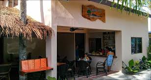

<ion-header>
  <ion-toolbar color="secondary">
    <ion-buttons slot="start">
      <ion-back-button [routerLink]="['/tourist/tourist-spots']"></ion-back-button>
    </ion-buttons>
    <ion-title>Service List</ion-title>
  </ion-toolbar>
</ion-header>

<ion-content>
  <ion-grid>
    <ion-row class = "list">
      <ion-col size="4">
        <div>
            
        </div>
      </ion-col >
      <ion-col size="5">
        <div>
          <ion-label>Pescador View</ion-label>
          <p>&#8369;666.00</p>
        </div>
      </ion-col>
      <ion-col size="3">
        <div class = "select">
          <ion-label [routerLink]="['/tourist/service-booking']">Select</ion-label>
        </div>
      </ion-col>
    </ion-row>
    <ion-row class = "list">
        <ion-col size="4">
          <div>
              
          </div>
        </ion-col >
        <ion-col size="5">
          <div>
            <ion-label>Pescador View</ion-label>
            <p>&#8369;666.00</p>
          </div>
        </ion-col>
        <ion-col size="3">
          <div class = "select">
            <ion-label >Select</ion-label>
          </div>
        </ion-col>
      </ion-row>
  </ion-grid>
</ion-content>
